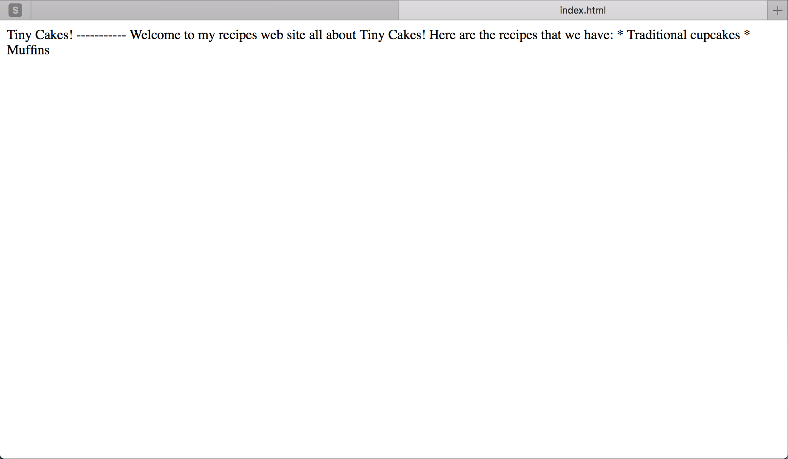

Etapy:
Step 3 - Znaczniki
Zacznijmy od naszej pierwszej strony index.html, która będzie naszą stroną główną.
Otwórz plik index.html w swojej przeglądarce.

No to nie wygląda za dobrze…
Twoja przeglądarka traktuje pliki z rozszerzeniem .html oraz .htm jako pliki zawierające kod HTML i wyświetla je w ten sposób. Nie zamieściliśmy w naszym pliku żadnego kodu HTML, więc przeglądarka interpretuje jedynie surowy tekst. HTML ignoruje znaki białej linii (enter, tabulator, multi spacja itp.), dlatego cały tekst wyświetlony jest w jednym akapicie.
Zauważ, że karta przeglądarki pokazuje ścieżkę do pliku, z prefiksem file: //. Nie wygląda to ładnie, prawda?
Nie o to nam chodziło. Dodamy do naszego pliku trochę HTML.
Zaktualizuj plik index.html i wklej do niego poniższy kod:
<!DOCTYPE html>
<html>
<head>
<title>Tiny Cakes!</title>
<meta charset="UTF-8" />
</head>
<body>
Tiny Cakes!
-----------
Welcome to my recipes web site all about Tiny Cakes!
Here are the recipes that we have:
* Traditional cupcakes
* Muffins
</body>
</html>
Zapisz i odśwież swoją przeglądarkę. Niby wygląda tak samo, ale popatrz znowu na kartę przeglądarki. Teraz zamiast ścieżki pliku pojawił się napis “Tiny Cakes!”.

Dodaliśmy kilka fragmentów HTML, które są jak szkielet lub ramkę dokumentu. Nie dodaliśmy jeszcze żadnych instrukcji formatowania, dlatego sam tekst wygląda nadal tak samo.
Przeanalizujemy poszczególne elementy, które dodaliśmy i dowiedzmy się co one oznaczają.
-
<!DOCTYPE html>Pierwszy wiersz to deklaracja typu dokumentu. To informuje przeglądarkę, w jakiej wersji HTML został napisany dokument.
Samo słowo „html” w deklaracji oznacza najnowszą wersję html. Obecnie najnowszą wersją jest wersja 5, i nie wygląda na to by zmieniło się to w najbliższym czasie.
Możesz natknąć się na deklaracje dotyczące starszych wersji HTML. Są one bardziej skomplikowane:
<!DOCTYPE HTML PUBLIC "-//W3C//DTD HTML 4.01 Transitional//EN" "http://www.w3.org/TR/html4/loose.dtd">Z technicznego punktu widzenia ta linia kodu jest opcjonalna. Jednak, jeśli jej nie zamieśmy, większość przeglądarek z automatu wejdzie w “quirks mode” (pl. tryb osobliwości), czyli zacznie interpretować kod zakładając wykorzystywanie przestarzałych konstrukcji z lat 90 niezgodnych ze obowiązującymi standardami. Quirks mode pozwala na zachowanie kompatybilności wstecznej względem starych stron internetowych. Nie jest to do końca złe, ale dzięki sprecyzowaniu deklaracji dokumenty będziemy mieć pewność, że nasza strona wyświetli się w podobny sposób niezależnie od przeglądarki, którą użyjemy.
-
<html>Każdy dokument powinien zacząć się od znacznika
<html>a skończyć znacznikiem</html>. Wszystko co zamieścimy między tymi znacznikami będzie uznane za część dokumentu. Większość znaczników (tagów) posiada znacznik otwierający(<html>) i zamykający (</html>). -
<head>i<title>Nasz dokument HTML składa się z dwóch głównych części: “głowy” (head) oraz “ciała” (body). Głowa dokumentu umieszczamy w znacznikach
<head></head>i będzie zawierać kilka różnych znaczników, które zawierają informacje na temat dokumentu. W naszym przypadku zamieściliśmy dwa znaczniki<title>i<meta>.<title>informuje przeglądarkę o tytule naszego dokumentu. Większość przeglądarek wyświetla tytuł dokumentu w zakładce lub oknie. Tytuł przydaje się również, kiedy zapisujemy daną stronę do zakładek. Rozumiesz już dlaczego przeglądarka wyświetla teraz Tiny Cakes! zamiast ścieżki? Dokładnie. Zdefiniowaliśmy nasz tytuł za pomocą znacznika<title>.Tag
<meta>to sposób na podanie przeglądarce dodatkowych informacji na temat strony. Tutaj używamy go w celu ustalenia jakiego kodowania znaków użyjemy. My zdecydowaliśmy się na UTF-8. Jest to opcjonalny krok, ale jeśli chcemy mieć pewność że znaki unicode (np. polskie znaki) będą wyświetlane prawidłowo to nie powinniśmy go ominąć.Istnieje oczywiście więcej znaczników, które możemy zamieścić w sekcji head naszej strony. Na dzisiaj wystarczą nam jednak te dwa.
-
<body>Znacznik
<body>to zawartość naszej strony web. To część widoczna w przeglądarce.
To na tyle jeśli chodzi o podstawową strukturę dokumentu HTML. Teraz przejdziemy już do formatowania zawartości sekcji <body>.